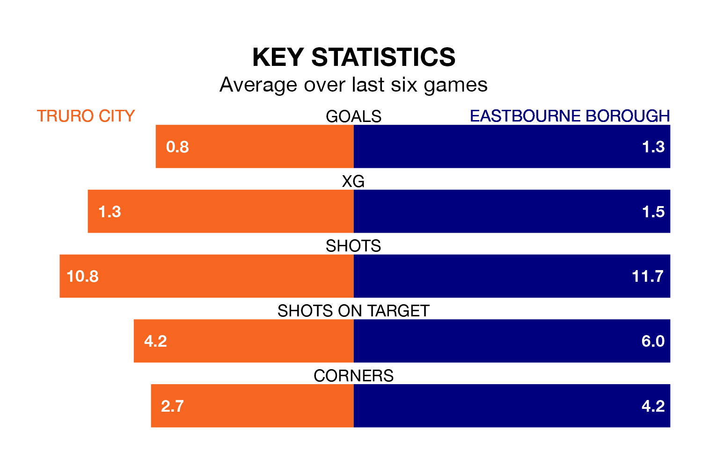

Eastbourne Borough travel to Truro City on late Wednesday in the National League South.
The visitors come into the game on the back of a win in their last match, having beaten Weymouth 1-0 at home.
Truro, meanwhile, lost their last match, 2-1 against Torquay United.
In the last 10 years, Truro and Eastbourne have played each other on nine occasions. Truro won four of them, Eastbourne two, and they drew three times.
On average, Truro scored 1.2 goals and the Sports 0.9 in those matches.
Their last meeting was on August 26, when Truro won 1-0 away.
Eastbourne are 20th in the table after 42 games, of which they have won 12 and drawn eight, earning 44 points.
Truro are one place ahead of Borough in 19th, with 13 wins and eight draws putting them on 47 points.
City are in disappointing form in the National League South, with one win and three draws from their last six games.
With three wins and two draws over that period, the Sports' form is better – they have taken 11 points from 18, compared to the hosts' six.
With 46 goals in 42 games so far this season, the away team are the league's third-lowest scorers with 1.1 goals per game. And they are conceding more than average, letting in 70 goals at a rate of 1.7 per game.
Truro are also below average scorers, with 1.3 goals per game, compared to a league average of 1.4. They have conceded 1.6 goals per game.
Updated: 14:47 (UTC), 09/04/24